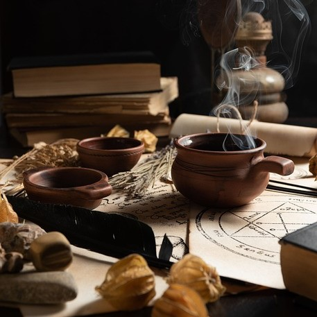

You were in no rush and you did not want to accidentally anger a witch. Who knows she might curse you if you refused. She instructed you to gather some Luciferns and herbs outside of her home. These are the main ingredients in her youth potion which she uses to keep her beautiful appearance. You must not get the wrong ingredient or you might have to face her wrath.